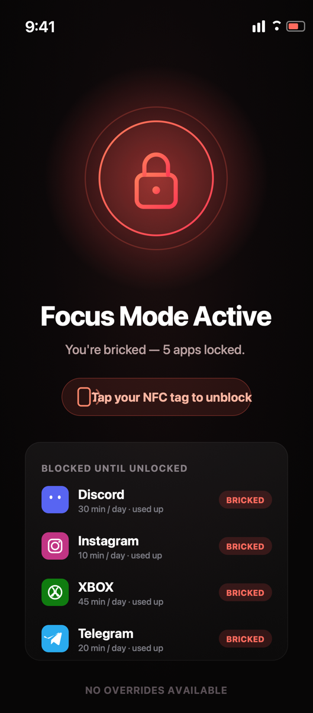
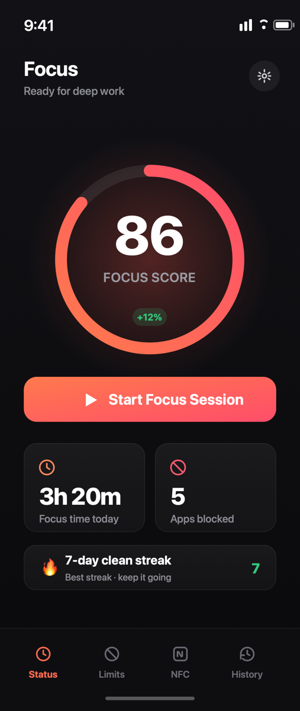

Block the apps that eat your time.
Tap in to unlock.
Give your worst-habit apps a daily time budget. Cross it and they brick—a full-screen block you can't just swipe away. The only way back in is a physical act: tapping the NFC tag you registered, or scanning your QR code.
iOS 16+ · Apple Family Controls · 100% on-device


-
Apple Screen Time Hard un-swipeable shields
-
Physical Friction Tap NFC tag or scan QR
-
100% On-Device No tracking or cloud servers
-
Midnight Reset Fresh clean start tomorrow
How Brickr breaks the loop
Willpower alone fails because our phones are designed to hijack it. Adding physical friction turns mindless reflex into an intentional decision.
Choose apps & set limits
Pick the apps you lose hours to (social media, video feeds, games) and give each a daily minute budget.
Use your phone normally
Use your apps as usual. The instant you cross your minute budget, Brickr shields that app with a full-screen block.
Physical tap to unbrick
Tap the NFC tag you registered (placed on your desk, in another room, or your car)—or scan your printed QR code to unlock.
Clean slate at midnight
All daily allowances reset at midnight automatically so every morning starts with zero guilt and maximum focus.
Built for genuine focus, not guilt
Every feature in Brickr is designed to nudge you toward real life without feeling punitive.
NFC Tag or Printed QR
Use any cheap NFC sticker (NTAG213/215), an existing transit card, or print a QR code card if your desk lacks NFC tags.
Apple Family Controls Shield
Uses Apple's native Screen Time API. Unlike fake timer apps, you cannot simply bypass it with app-switcher gestures.
Block screen with a reason
Customize your block screen with your own reminders: "You set this to finish your thesis." or "Go outside."
Emergency friction unlock
Need urgent access to messages or maps? An intentional reflection cooldown allows urgent access without breaking habits.
Weekly Focus Score
Apple Health–style activity rings, clean-day streak counter, and 7-day usage trends show your reclaim progress.
100% Private by design
Your app choices, screen time statistics, and tag data never leave your iPhone. Zero analytics, zero advertising SDKs.
Insights that actually mean something
No convoluted dashboards. Just clear metrics that celebrate your attention returning to the things that matter.
- Weekly Focus Score (0–100): Measures how well you respected your daily allowances across all apps.
- Clean Day Streaks: Track consecutive days where zero apps had to be bricked.
- Breakdown by App: Identify exactly which applications trigger mindless scrolling.
Private by architecture, not just by policy
Brickr is built directly on top of Apple's FamilyControls and ManagedSettings frameworks. Your app selection, screen time usage, and NFC identifiers are sandboxed on your iPhone.
Put temptation just out of reach.
Live a little more fully.
Available for iPhone running iOS 16.0 or later.
Independent software by {{STUDIO}}